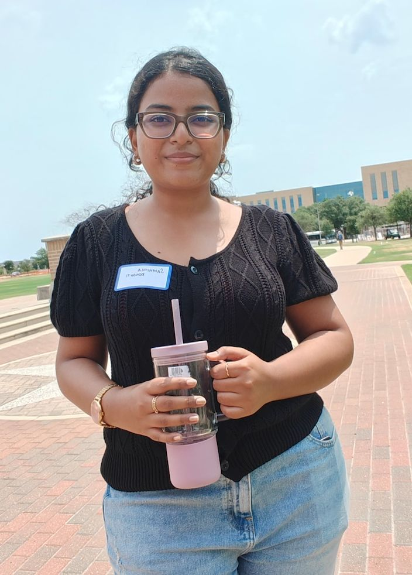
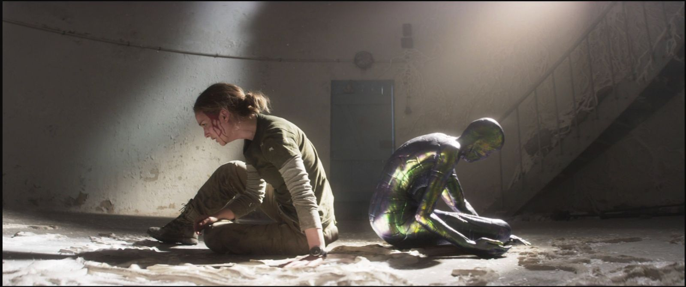
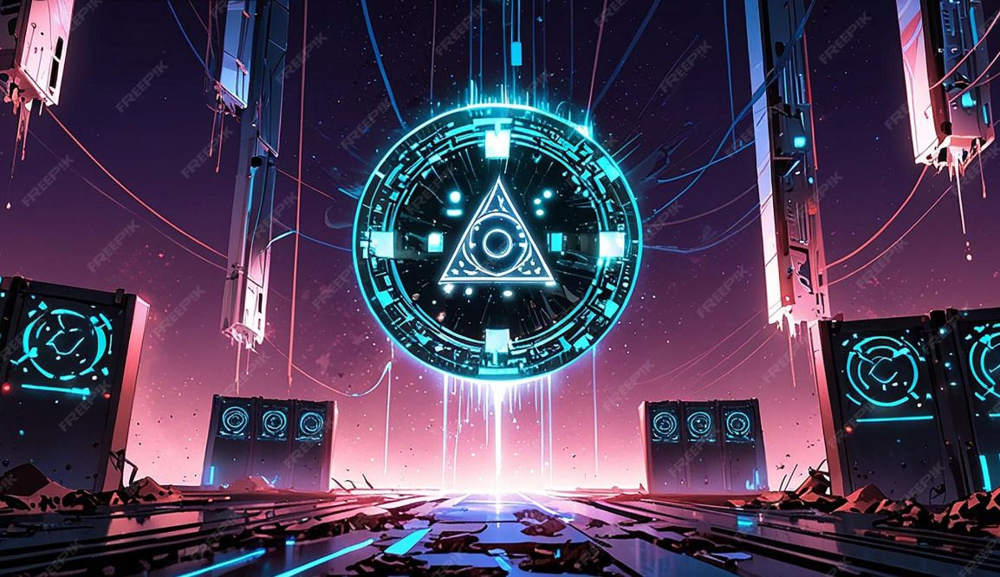
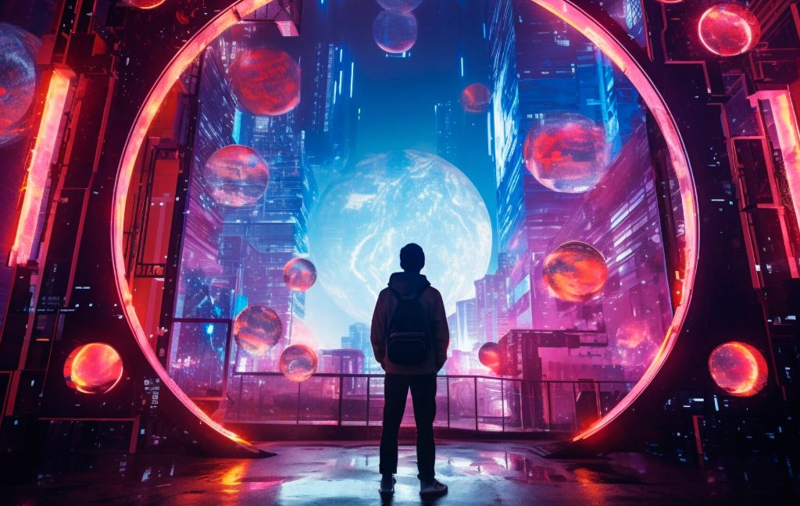

I am a first year Master's student at TAMU CSE with a 4.0 GPA. I received my Bachelor's degree in Computer Science from NIT Durgapur. My current research interests are in AI in Quantum Computing and Post-Quantum Cybersecurity. I have also been invested in Machine Learning, where I implemented Graph Neural Networks on PyTorch Geometrics while working on the Detection of Hardware Trojans.
Why CSCE 656 Computers and New Media: Being a CS student, I believe it is essential to include an element of creativity in every application we build. I am personally attracted to adding that touch of new interaction levels for users in everything I develop. This course on Computers and New Media will help me understand how the implementation of media affects user experience, bridging the gap between my technical backend skills and user-centric design.
I’m a very diverse person; therefore, my consumption level on a daily basis starts from my cellphone, Gmail, newspaper, and smart speakers, and ends at night with a Galaxy robot.
My interest and attention are mostly grasped by Sci-Fi movies and extensively by Virtual Reality (such as Vision Pro devices), which deal with merging digital content with physical reality.
Take Disney animated movies for instance. Their evolution aligns with what Janet Murray describes in Hamlet on the Holodeck as the spatial and procedural power of the digital medium. By shifting to the Computer Animation Production System (CAPS), Disney moved beyond the flat, static nature of traditional cel animation into a navigable virtual space. This proprietary software allowed for a multiplane virtual camera that could move deeply into the scene, creating an immersive "digital environment" that replaced the "fourth wall" with a sense of spatial participation. The software's encyclopedic capacity enabled unlimited color palettes and complex lighting, fulfilling the computer's promise to expand the boundaries of storytelling through technical precision.
Similarly, the sci-fi film Annihilation functions as a cinematic "Holodeck"—a simulation so total that it blurs the line between the physical and the digital. The film's "Shimmer" was created using procedural generation tools like Houdini and Mandelbulb 3D, which leverage the computer's ability to execute complex rule-based algorithms (procedurality) rather than manual sculpting. These fractals were composited in Nuke with LIDAR scans of real environments, creating a liminal space that feels biologically real yet mathematically impossible. This exemplifies Murray's vision of the computer as an "enchanted" medium that can actively create belief, immersing the audience in an altered realm of reality.

As a Master’s student, my transition from consumer to creator is defined by what Janet Murray calls procedural authorship. I do not simply generate static content; I architect systems that function as "active creation." My research in Hardware Security involves generating Graph Neural Networks (GNNs), where I transform raw code into Abstract Syntax Trees (ASTs). This process turns linear data into a spatial map of logic, allowing me to "navigate" the vulnerabilities of a microchip much like a navigable digital environment.
Beyond code, I utilize LaTeX to generate the rigid, standardized media of the scientific community. Here, the challenge is translating the fluid, probabilistic nature of Quantum Algorithms and AI into the fixed, linear format of a research paper. This duality—between writing dynamic code that executes rules (procedural) and writing static papers that explain them—forms the core of my identity as a technical creator.
Future Vision: The Cyber Quantum Game Space
Currently, I am ideating a 'Cyber Quantum Game Space,' a project that embodies the ultimate promise of the digital medium. Inspired by the 'Holodeck's' ability to simulate alternative laws of physics, I envision a virtual environment where Quantum Mechanics (superposition, entanglement) dictates the procedural rules of the world, and Cybersecurity protocols form the narrative conflict. This would not just be a game, but a spatialized simulation of my research, transforming abstract mathematical cipher ensembles into a navigable, interactive experience.


As software capability grows, the challenges shift from "can we do this?" to "can we compute this in real-time?"
In modern media generation (like the Annihilation "Shimmer" or modern Disney water/fire effects), the software challenge is no longer manual drawing, but controlling algorithmic chaos. Tools like Houdini use node-based procedural generation to create millions of particles. The "latest" challenge is Artistic Directability: changing one variable in a fractal algorithm can completely break the visual composition. Software engineers now struggle to build "guide rails" that allow directors to control these massive, mathematically generated simulations without breaking the underlying physics engine.
While LaTeX itself is stable, the modern challenge is in Cloud-Based Compilation (e.g., Overleaf).
For my Cyber-Quantum Game Space, the software bottleneck is the Memory Wall.
Simulating quantum mechanics on a classical computer (the game engine) faces an exponential hurdle. To simulate just n qubits, the software must store 2n complex coefficients.
The Challenge: A game with just 50 quantum variables would require petabytes of RAM, which is impossible for a user's device. I am currently facing the challenge of writing a "Sparse State Vector" algorithm—a software technique that discards near-zero probabilities to approximate the quantum state, trading a tiny margin of accuracy for the ability to run the game in real-time.